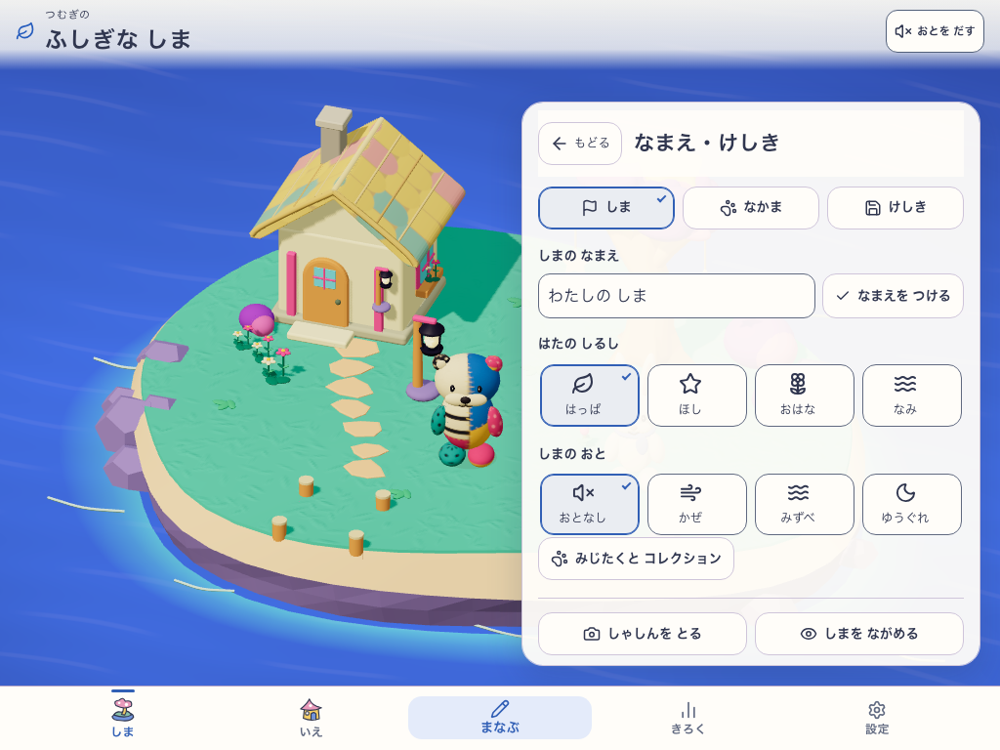
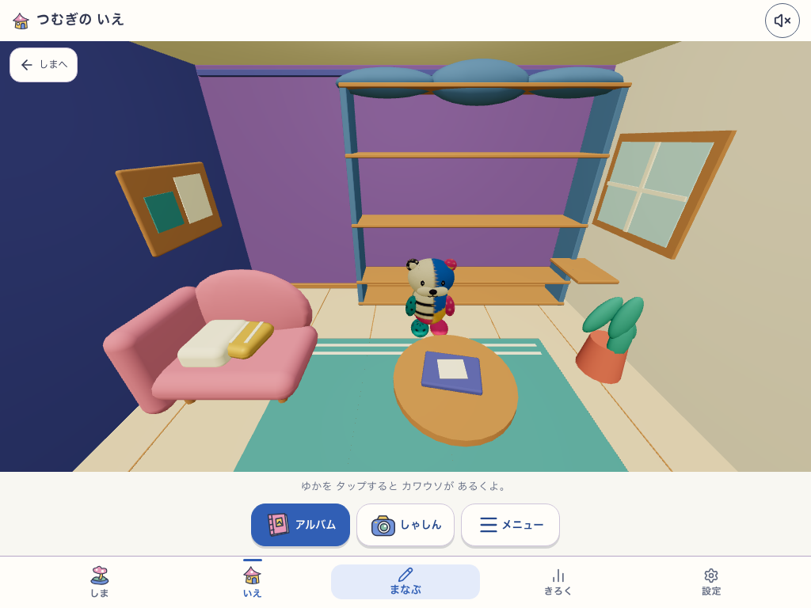
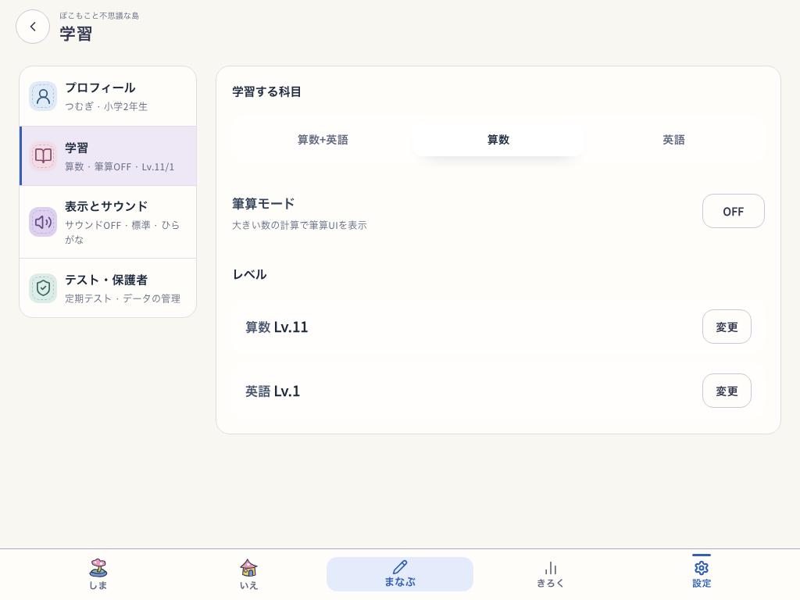
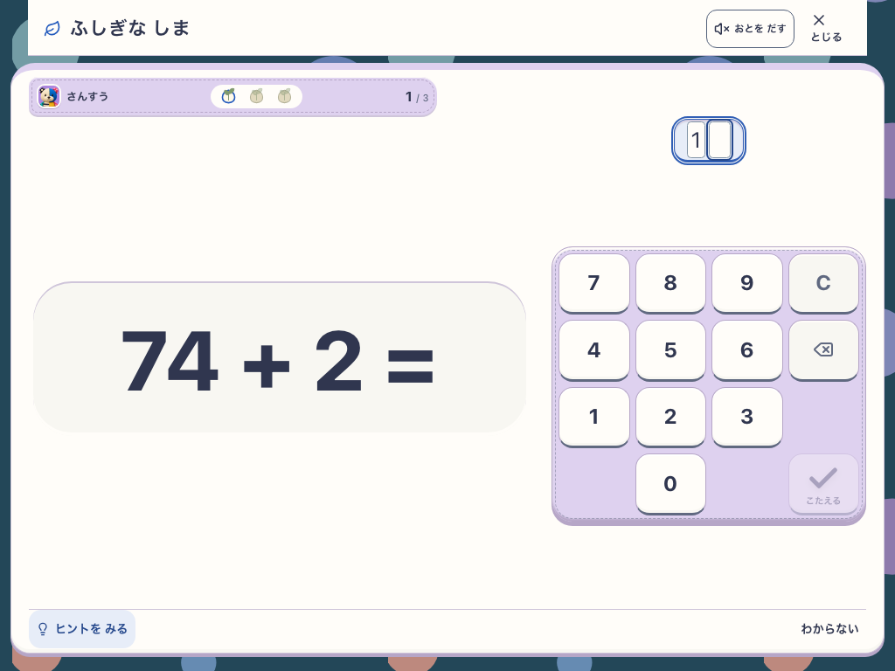
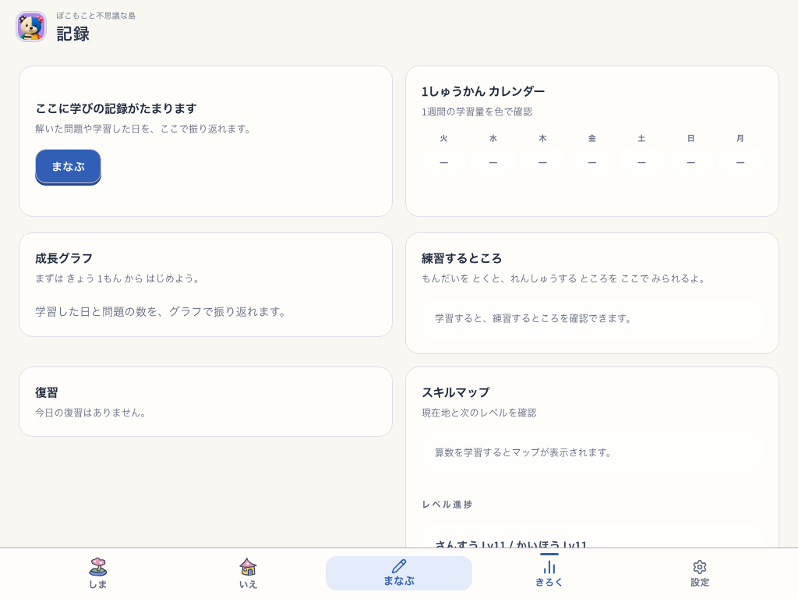
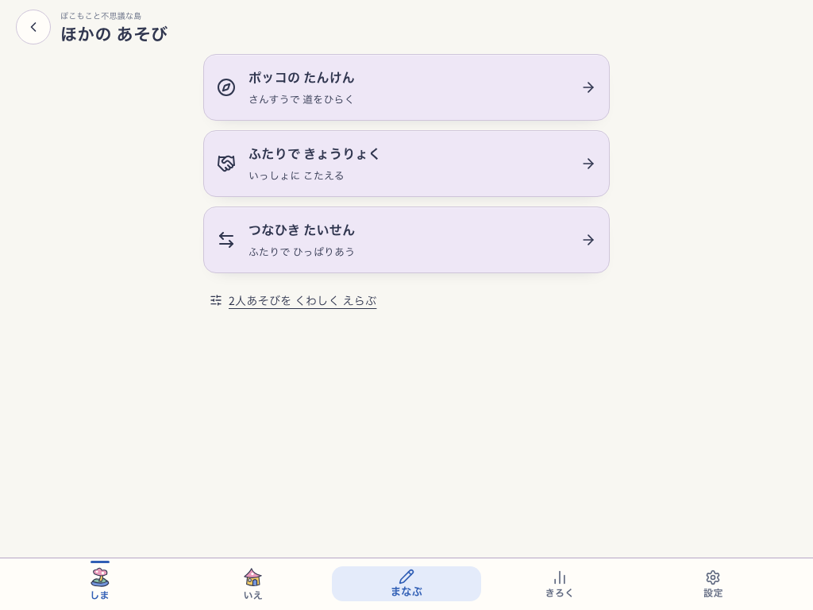
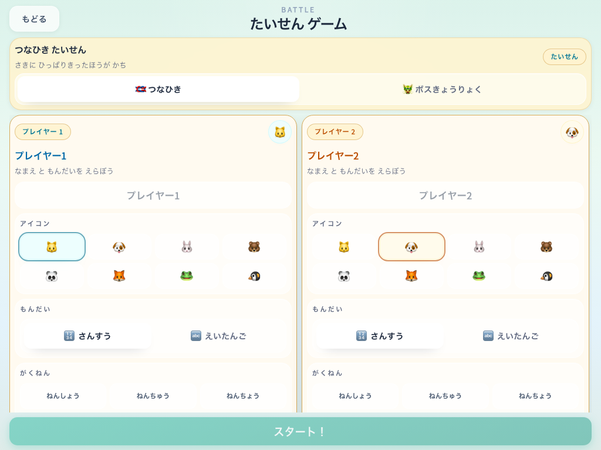

Island navigation: PASS
http://127.0.0.1:5200 · 18 captures · 1 viewport runs
 1024×768 · welcome · e115e896:a1504f4e-471b-4a2e-9a45-7a5cb0d84f95 · mystic-island-v1 · mystic-island-shore-garden-v18 · not-applicable · root Island true / NatureTown false · e115e896 · e115e896:a1504f4e-471b-4a2e-9a45-7a5cb0d84f95 · snap-root-v1
1024×768 · welcome · e115e896:a1504f4e-471b-4a2e-9a45-7a5cb0d84f95 · mystic-island-v1 · mystic-island-shore-garden-v18 · not-applicable · root Island true / NatureTown false · e115e896 · e115e896:a1504f4e-471b-4a2e-9a45-7a5cb0d84f95 · snap-root-v1 1024×768 · home · e115e896:a1504f4e-471b-4a2e-9a45-7a5cb0d84f95 · mystic-island-v1 · mystic-island-shore-garden-v18 · mystic-island-learning-v2 · root Island true / NatureTown false · e115e896 · e115e896:a1504f4e-471b-4a2e-9a45-7a5cb0d84f95 · snap-root-v1
1024×768 · home · e115e896:a1504f4e-471b-4a2e-9a45-7a5cb0d84f95 · mystic-island-v1 · mystic-island-shore-garden-v18 · mystic-island-learning-v2 · root Island true / NatureTown false · e115e896 · e115e896:a1504f4e-471b-4a2e-9a45-7a5cb0d84f95 · snap-root-v1 1024×768 · play · e115e896:a1504f4e-471b-4a2e-9a45-7a5cb0d84f95 · mystic-island-v1 · mystic-island-shore-garden-v18 · mystic-island-learning-v2 · root Island true / NatureTown false · e115e896 · e115e896:a1504f4e-471b-4a2e-9a45-7a5cb0d84f95 · snap-root-v1
1024×768 · play · e115e896:a1504f4e-471b-4a2e-9a45-7a5cb0d84f95 · mystic-island-v1 · mystic-island-shore-garden-v18 · mystic-island-learning-v2 · root Island true / NatureTown false · e115e896 · e115e896:a1504f4e-471b-4a2e-9a45-7a5cb0d84f95 · snap-root-v1 1024×768 · guide · e115e896:a1504f4e-471b-4a2e-9a45-7a5cb0d84f95 · mystic-island-v1 · mystic-island-shore-garden-v18 · mystic-island-learning-v2 · root Island true / NatureTown false · e115e896 · e115e896:a1504f4e-471b-4a2e-9a45-7a5cb0d84f95 · snap-root-v1
1024×768 · guide · e115e896:a1504f4e-471b-4a2e-9a45-7a5cb0d84f95 · mystic-island-v1 · mystic-island-shore-garden-v18 · mystic-island-learning-v2 · root Island true / NatureTown false · e115e896 · e115e896:a1504f4e-471b-4a2e-9a45-7a5cb0d84f95 · snap-root-v1 1024×768 · inventory · e115e896:a1504f4e-471b-4a2e-9a45-7a5cb0d84f95 · mystic-island-v1 · mystic-island-shore-garden-v18 · mystic-island-learning-v2 · root Island true / NatureTown false · e115e896 · e115e896:a1504f4e-471b-4a2e-9a45-7a5cb0d84f95 · snap-root-v1
1024×768 · inventory · e115e896:a1504f4e-471b-4a2e-9a45-7a5cb0d84f95 · mystic-island-v1 · mystic-island-shore-garden-v18 · mystic-island-learning-v2 · root Island true / NatureTown false · e115e896 · e115e896:a1504f4e-471b-4a2e-9a45-7a5cb0d84f95 · snap-root-v1 1024×768 · customization · e115e896:a1504f4e-471b-4a2e-9a45-7a5cb0d84f95 · mystic-island-v1 · mystic-island-shore-garden-v18 · mystic-island-learning-v2 · root Island true / NatureTown false · e115e896 · e115e896:a1504f4e-471b-4a2e-9a45-7a5cb0d84f95 · snap-root-v1
1024×768 · customization · e115e896:a1504f4e-471b-4a2e-9a45-7a5cb0d84f95 · mystic-island-v1 · mystic-island-shore-garden-v18 · mystic-island-learning-v2 · root Island true / NatureTown false · e115e896 · e115e896:a1504f4e-471b-4a2e-9a45-7a5cb0d84f95 · snap-root-v1
1024×768 · experience · e115e896:a1504f4e-471b-4a2e-9a45-7a5cb0d84f95 · mystic-island-v1 · mystic-island-shore-garden-v18 · mystic-island-learning-v2 · root Island true / NatureTown false · e115e896 · e115e896:a1504f4e-471b-4a2e-9a45-7a5cb0d84f95 · snap-root-v1 1024×768 · help · e115e896:a1504f4e-471b-4a2e-9a45-7a5cb0d84f95 · mystic-island-v1 · mystic-island-shore-garden-v18 · mystic-island-learning-v2 · root Island true / NatureTown false · e115e896 · e115e896:a1504f4e-471b-4a2e-9a45-7a5cb0d84f95 · snap-root-v1
1024×768 · help · e115e896:a1504f4e-471b-4a2e-9a45-7a5cb0d84f95 · mystic-island-v1 · mystic-island-shore-garden-v18 · mystic-island-learning-v2 · root Island true / NatureTown false · e115e896 · e115e896:a1504f4e-471b-4a2e-9a45-7a5cb0d84f95 · snap-root-v1
1024×768 · keepsakes · e115e896:a1504f4e-471b-4a2e-9a45-7a5cb0d84f95 · mystic-island-v1 · mystic-island-shore-garden-v18 · mystic-island-learning-v2 · root Island true / NatureTown false · e115e896 · e115e896:a1504f4e-471b-4a2e-9a45-7a5cb0d84f95 · snap-root-v1
1024×768 · home · e115e896:a1504f4e-471b-4a2e-9a45-7a5cb0d84f95 · mystic-island-v1 · mystic-island-shore-garden-v18 · mystic-island-learning-v2 · root Island true / NatureTown false · e115e896 · e115e896:a1504f4e-471b-4a2e-9a45-7a5cb0d84f95 · snap-root-v1
1024×768 · learning · e115e896:a1504f4e-471b-4a2e-9a45-7a5cb0d84f95 · mystic-island-v1 · mystic-island-shore-garden-v18 · mystic-island-learning-v2 · root Island true / NatureTown false · e115e896 · e115e896:a1504f4e-471b-4a2e-9a45-7a5cb0d84f95 · snap-root-v1
1024×768 · home · e115e896:a1504f4e-471b-4a2e-9a45-7a5cb0d84f95 · mystic-island-v1 · mystic-island-shore-garden-v18 · mystic-island-learning-v2 · root Island true / NatureTown false · e115e896 · e115e896:a1504f4e-471b-4a2e-9a45-7a5cb0d84f95 · snap-root-v1 1024×768 · photos · e115e896:a1504f4e-471b-4a2e-9a45-7a5cb0d84f95 · mystic-island-v1 · mystic-island-shore-garden-v18 · mystic-island-learning-v2 · root Island true / NatureTown false · e115e896 · e115e896:a1504f4e-471b-4a2e-9a45-7a5cb0d84f95 · snap-root-v1
1024×768 · photos · e115e896:a1504f4e-471b-4a2e-9a45-7a5cb0d84f95 · mystic-island-v1 · mystic-island-shore-garden-v18 · mystic-island-learning-v2 · root Island true / NatureTown false · e115e896 · e115e896:a1504f4e-471b-4a2e-9a45-7a5cb0d84f95 · snap-root-v1 1024×768 · photos · e115e896:a1504f4e-471b-4a2e-9a45-7a5cb0d84f95 · mystic-island-v1 · mystic-island-shore-garden-v18 · mystic-island-learning-v2 · root Island true / NatureTown false · e115e896 · e115e896:a1504f4e-471b-4a2e-9a45-7a5cb0d84f95 · snap-root-v1
1024×768 · photos · e115e896:a1504f4e-471b-4a2e-9a45-7a5cb0d84f95 · mystic-island-v1 · mystic-island-shore-garden-v18 · mystic-island-learning-v2 · root Island true / NatureTown false · e115e896 · e115e896:a1504f4e-471b-4a2e-9a45-7a5cb0d84f95 · snap-root-v1 1024×768 · not-applicable-shared-utility · root Island true / NatureTown false · e115e896 · e115e896:a1504f4e-471b-4a2e-9a45-7a5cb0d84f95 · snap-root-v1
1024×768 · not-applicable-shared-utility · root Island true / NatureTown false · e115e896 · e115e896:a1504f4e-471b-4a2e-9a45-7a5cb0d84f95 · snap-root-v1 1024×768 · not-applicable-shared-utility · root Island true / NatureTown false · e115e896 · e115e896:a1504f4e-471b-4a2e-9a45-7a5cb0d84f95 · snap-root-v1
1024×768 · not-applicable-shared-utility · root Island true / NatureTown false · e115e896 · e115e896:a1504f4e-471b-4a2e-9a45-7a5cb0d84f95 · snap-root-v1
1024×768 · not-applicable-shared-utility · root Island true / NatureTown false · e115e896 · e115e896:a1504f4e-471b-4a2e-9a45-7a5cb0d84f95 · snap-root-v1
1024×768 · not-applicable-shared-utility · root Island true / NatureTown false · e115e896 · e115e896:a1504f4e-471b-4a2e-9a45-7a5cb0d84f95 · snap-root-v1